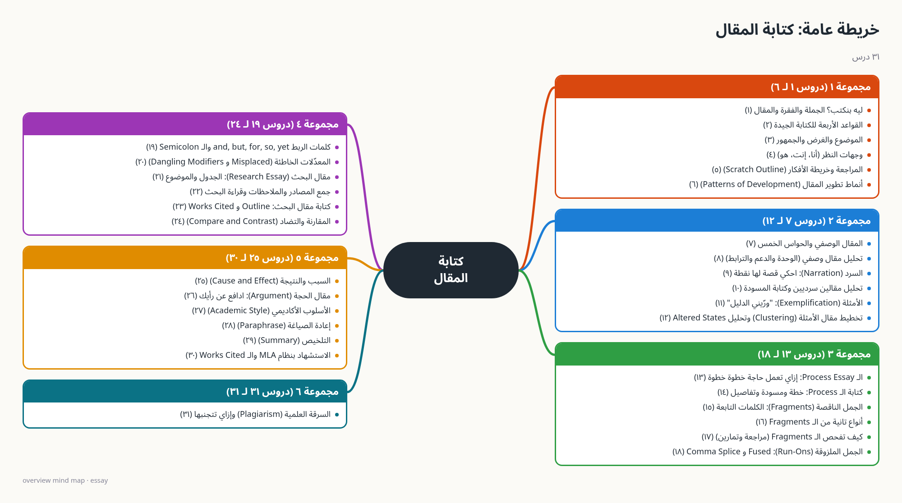

✍️
كتابة المقالة
من الفقرة للمقالة الكاملة، خطوة بخطوة.
🧠 شوف الخريطة الذهنية الشاملة للكورس

📚 ملفات PDF إضافية للكورس
📄 الإنشاء، الدروس 1 إلى 3: إنجليزي مبسط📄 الإنشاء، الدروس 1 إلى 3: إنجليزي + مصري📄 الإنشاء، الدروس 1 إلى 3: ملخصات📄 الإنشاء، الدروس 1 إلى 31: إنجليزي مبسط📄 الإنشاء، الدروس 1 إلى 31: إنجليزي + مصري📄 الإنشاء، الدروس 1 إلى 31: ملخصات📄 الإنشاء، الدروس 4 إلى 6: إنجليزي مبسط📄 الإنشاء، الدروس 4 إلى 6: إنجليزي + مصري📄 الإنشاء، الدروس 4 إلى 6: ملخصات📄 الإنشاء، الدروس 7 إلى 9: إنجليزي مبسط📄 الإنشاء، الدروس 7 إلى 9: إنجليزي + مصري📄 الإنشاء، الدروس 7 إلى 9: ملخصات📄 الإنشاء، الدروس 10 إلى 12: إنجليزي مبسط📄 الإنشاء، الدروس 10 إلى 12: إنجليزي + مصري📄 الإنشاء، الدروس 10 إلى 12: ملخصات📄 الإنشاء، الدروس 13 إلى 15: إنجليزي مبسط📄 الإنشاء، الدروس 13 إلى 15: إنجليزي + مصري📄 الإنشاء، الدروس 13 إلى 15: ملخصات📄 الإنشاء، الدروس 16 إلى 18: إنجليزي مبسط📄 الإنشاء، الدروس 16 إلى 18: إنجليزي + مصري📄 الإنشاء، الدروس 16 إلى 18: ملخصات📄 الإنشاء، الدروس 19 إلى 21: إنجليزي مبسط📄 الإنشاء، الدروس 19 إلى 21: إنجليزي + مصري📄 الإنشاء، الدروس 19 إلى 21: ملخصات📄 الإنشاء، الدروس 22 إلى 24: إنجليزي مبسط📄 الإنشاء، الدروس 22 إلى 24: إنجليزي + مصري📄 الإنشاء، الدروس 22 إلى 24: ملخصات📄 الإنشاء، الدروس 25 إلى 27: إنجليزي مبسط📄 الإنشاء، الدروس 25 إلى 27: إنجليزي + مصري📄 الإنشاء، الدروس 25 إلى 27: ملخصات📄 الإنشاء، الدروس 28 إلى 30: إنجليزي مبسط📄 الإنشاء، الدروس 28 إلى 30: إنجليزي + مصري📄 الإنشاء، الدروس 28 إلى 30: ملخصات📄 الإنشاء، الدرس 31: إنجليزي مبسط📄 الإنشاء، الدرس 31: إنجليزي + مصري📄 الإنشاء، الدرس 31: ملخصات
✍️
الدرس 1: Essay Writing 1: ليه بنكتب؟ الجملة والفقرة والمقال📊 A2
🏟️
الدرس 2: Essay Writing 2: القواعد الأربعة للكتابة الجيدة📊 A2
🎯
الدرس 3: Essay Writing 3: الموضوع والغرض والجمهور📊 A2
👁️
الدرس 4: Essay Writing 4: وجهات النظر (أنا، إنت، هو)📊 B1
🔍
الدرس 5: Essay Writing 5: المراجعة وخريطة الأفكار (Scratch Outline)📊 B1
🧩
الدرس 6: Essay Writing 6: أنماط تطوير المقال (Patterns of Development)📊 B1
🎨
الدرس 7: Essay Writing 7: المقال الوصفي والحواس الخمس📊 B1
🧐
الدرس 8: Essay Writing 8: تحليل مقال وصفي (الوحدة والدعم والترابط)📊 B1
📖
الدرس 9: Essay Writing 9: السرد (Narration): احكي قصة لها نقطة📊 B1
⏱️
الدرس 10: Essay Writing 10: تحليل مقالين سرديين وكتابة المسودة📊 B1
💡
الدرس 11: Essay Writing 11: الأمثلة (Exemplification): "ورّيني الدليل"📊 B1
🕸️
الدرس 12: Essay Writing 12: تخطيط مقال الأمثلة (Clustering) وتحليل Altered States📊 B1
🍳
الدرس 13: Essay Writing 13: الـ Process Essay: إزاي تعمل حاجة خطوة خطوة📊 B1
🛠️
الدرس 14: Essay Writing 14: كتابة الـ Process: خطة ومسودة وتفاصيل📊 B1
🧱
الدرس 15: Essay Writing 15: الجمل الناقصة (Fragments): الكلمات التابعة📊 B1
🧩
الدرس 16: Essay Writing 16: أنواع تانية من الـ Fragments📊 B1
✅
الدرس 17: Essay Writing 17: كيف تفحص الـ Fragments (مراجعة وتمارين)📊 B1
🚂
الدرس 18: Essay Writing 18: الجمل الملزوقة (Run-Ons): Fused و Comma Splice📊 B1
🔗
الدرس 19: Essay Writing 19: كلمات الربط and, but, for, so, yet والـ Semicolon📊 B1
🎯
الدرس 20: Essay Writing 20: المعدّلات الخاطئة (Misplaced و Dangling Modifiers)📊 B1
🗓️
الدرس 21: Essay Writing 21: مقال البحث (Research Essay): الجدول والموضوع📊 B2
📚
الدرس 22: Essay Writing 22: جمع المصادر والملاحظات وقراءة البحث📊 B2
📝
الدرس 23: Essay Writing 23: كتابة مقال البحث: Outline و Works Cited📊 B2
⚖️
الدرس 24: Essay Writing 24: المقارنة والتضاد (Compare and Contrast)📊 B1
🔄
الدرس 25: Essay Writing 25: السبب والنتيجة (Cause and Effect)📊 B1
🗣️
الدرس 26: Essay Writing 26: مقال الحجة (Argument): ادافع عن رأيك📊 B2
🎓
الدرس 27: Essay Writing 27: الأسلوب الأكاديمي (Academic Style)📊 B2
🔁
الدرس 28: Essay Writing 28: إعادة الصياغة (Paraphrase)📊 B2
✂️
الدرس 29: Essay Writing 29: التلخيص (Summary)📊 B2
🏷️
الدرس 30: Essay Writing 30: الاستشهاد بنظام MLA والـ Works Cited📊 B2
🛡️
الدرس 31: Essay Writing 31: السرقة العلمية (Plagiarism) وإزاي تتجنبها📊 B2